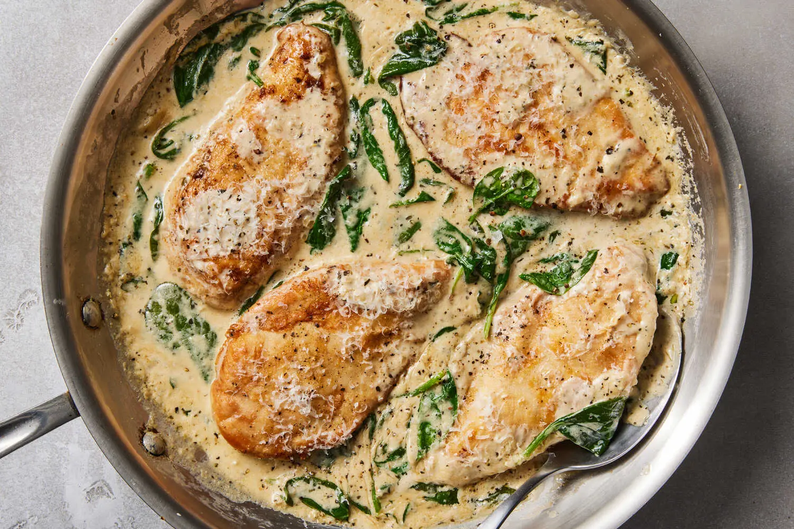

Chicken Florentine

Pan-seared chicken breasts in a creamy Parmesan sauce with spinach, white wine, and cream cheese - a rich and comforting one-pan dinner.
¼ cupall-purpose flour¼ cupgrated Parmesan, plus more for serving4thin-cut boneless skinless chicken breasts (about 1 pound)1 tbspolive oil4 tbspbutter, divided1medium shallot, minced2garlic cloves, minced½ cupdry white wine½ cupchicken broth1 tspdried basil (or 1 tbsp chopped fresh basil)1 tspdried oregano (or 1 tsp chopped fresh oregano)½ cupheavy cream2 ozcream cheese, at room temperature2 cupspacked baby spinach (about 3 ounces)- Salt and black pepper
On a plate, mix together the flour, Parmesan, and a generous pinch of salt and pepper. Dredge each chicken breast in the mixture, evenly coating on both sides.
Heat a large skillet over medium. Add the olive oil and 2 tablespoons butter. Once the butter is melted and bubbling, add the chicken and cook until golden brown, about 4 minutes per side. Transfer the chicken to a plate.
Add the remaining 2 tablespoons butter to the skillet. Add the shallot, garlic, and a pinch of salt and cook, stirring occasionally, until softened and fragrant, about 2 minutes.
Add wine, broth, basil and oregano, and stir, scraping the browned bits from the bottom of the pan, until the liquid has reduced by about half, 3 to 4 minutes. Add the heavy cream and cream cheese and stir, allowing the cream cheese to soften and melt, until a thick sauce forms, about 6 minutes. Add baby spinach and stir until it is folded into the cream sauce and the spinach is beginning to wilt, about 1 minute.
Return the chicken breasts to the pan and simmer until the chicken is cooked through, 4 to 5 minutes. Remove from heat and serve immediately with freshly grated Parmesan on top.